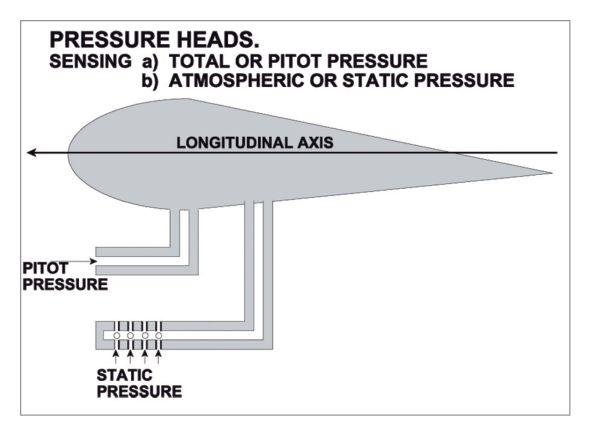
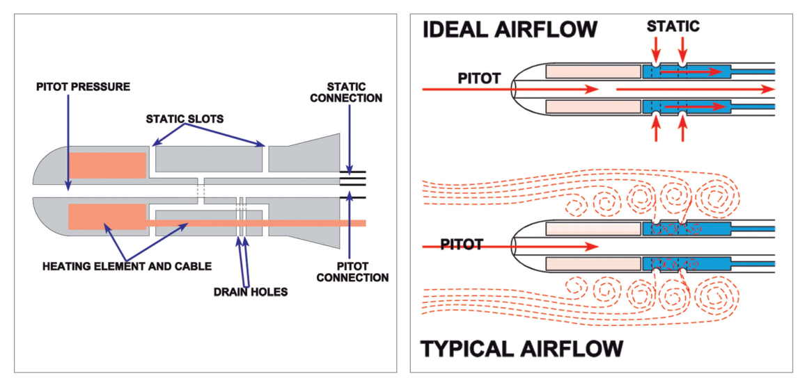
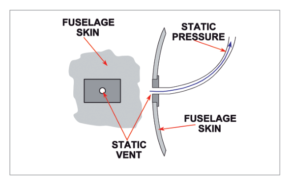
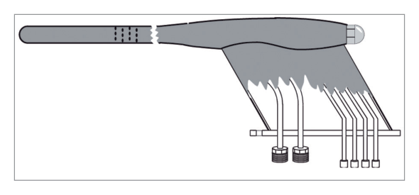

What this section covers: the three pressures an aircraft experiences and the fundamental relationship the air-data instruments exploit.
An aircraft at rest in still air is subject to static pressure — ambient atmospheric pressure bearing equally on all parts. In flight it remains subject to static pressure but the leading edges also encounter an additional pressure due to the air resisting the aircraft's motion. This is dynamic pressure, whose value depends on the aircraft's speed through the air and on air density. The leading edges therefore feel a total (pitot) pressure = static + dynamic.
Dynamic pressure cannot be measured directly because it cannot be separated from the associated static pressure. Instruments therefore measure total (pitot) and static pressure, and subtract static from pitot internally to derive dynamic pressure.
The key relationship:
PITOT = STATIC + DYNAMIC
DYNAMIC = PITOT − STATIC
Where PITOT (Pt) = total pressure and STATIC (Ps) = static pressure. Worked example: if pitot = 1080 hPa and static = 1013 hPa, then dynamic = 1080 − 1013 = 67 hPa, which the ASI converts to an airspeed.
Which instrument needs which pressure
Static only
Pitot and Static
Altimeter
Airspeed Indicator (ASI)
Vertical Speed Indicator (VSI)
Machmeter
flowchart LR
P[Pitot source total pressure] --> ASI[ASI]
P --> M[Machmeter]
S[Static source ambient pressure] --> ASI
S --> M
S --> ALT[Altimeter]
S --> VSI[VSI]
2. Pitot / Static Heads
What this section covers: how total and static pressures are physically sensed outside the aircraft.
Because internal pressure/temperature differ from outside, pitot and static pressures must be sensed by devices mounted on the outside of the aircraft. An open-ended tube parallel to the longitudinal axis senses total pressure — a pitot tube in a pitot head. The open end faces the airstream; the moving air is brought to rest in the tube, generating the dynamic pressure which, with the static pressure already present, gives total (pitot) pressure.
A static head is a tube with its forward end sealed but with holes or slots in the sides. The slots do not face the airflow, so in theory they sense only static pressure (in practice a slight suction makes the sensed value a little low when moving). The static and pitot sources may be combined in one pressure head, the static tube surrounding the pitot tube.

Fig 2.1 — Separate pitot and static heads — source p.14

Fig 2.2 — Combined pitot/static pressure head — source p.15
3. Requirements of a Pitot Tube
What this section covers: positioning, anti-icing and drainage requirements of the pitot tube.
Must be positioned outside the boundary layer — hence a head on a strut, or a nose tube ahead of the fuselage.
Opening must be parallel to the airflow in the normal flight attitude.
Air is either brought to rest against a stagnation wall then piped to the ASI/Machmeter, or passed directly up the pitot pipelines (more usual in elementary aircraft).
Why anti-icing is mandatory: measurement of dynamic pressure is essential to safe flight — too slow and the aircraft stalls, too fast and it is overstressed. The ASI is flight-safety-critical and must not block with ice, so an electric anti-icing heater coil is usually fitted. Drain holes are provided so any water drains before it can freeze; the small pressure loss they cause is calibrated out.
4. Requirements of a Static Source
What this section covers: how a static source is oriented so it senses pure static pressure.
The static source — whether a simple hole or a combined probe — should have its opening at right angles to the airflow, so only static pressure is sensed with no dynamic component. Some static sensors (especially in combined probes) are electrically heated.
5. Position Error & the Static Vent
What this section covers: the origin of position (pressure) error and how the static vent reduces it.
With forward motion the sensed static pressure is slightly low due to suction; as speed increases, turbulent airflow near the heads makes the error grow. This is Position Error (also called pressure error). At large angles of attack (lower airspeeds) the head sits at an angle to the airstream, so position error is usually greater. Flight manuals may list different position-error values for different flap settings.
Turbulence from the head itself affects the static reading more than the pitot reading, because the turbulence is downstream of the pitot opening.

Fig 2.3 — How turbulence affects the value of static pressure — source p.15
The static vent
To reduce this, the static vent was introduced as the static source (pitot pressure then sensed by a simple pitot head). A flat metal plate with a small circular hole is fitted where true (or nearly true) static pressure exists across the whole speed range. A matching vent on the opposite side is interconnected so errors from yawing are largely eliminated.

Fig 2.4 — A static vent — source p.16
Advantages of the static vent: airflow at the vents is less turbulent so static pressure is more accurate; errors when side-slipping or yawing are reduced; and duplicating vents on each side (cross-balancing) further reduces side-slip/yaw errors.
6. High Speed Probes
What this section covers: why fast aircraft revert to a combined probe, and where probes/vents are located.
Shock waves at high Mach numbers can cause significant errors in pressure sensed by a static vent. High-speed aircraft therefore use a more sophisticated combined pitot/static pressure head to keep position error within acceptable limits. Typical locations: ahead of a wing tip, under a wing, ahead of the vertical stabiliser tip, at the side of the fuselage nose, and ahead of the fuselage nose.
What this section covers: a transient error caused by manoeuvring, its timing and its danger.
Manoeuvre-induced error is caused by short-term pressure fluctuations at the static vents and delays in the pipelines transmitting changes to the instruments. Even servo altimeters and air-data computers suffer it, as they use the same static vents. Prime causes: changes in angle of attack and turbulence from lowering/raising flaps and landing gear.
Most commonly appears as a marked lag in pressure-instrument indications.
More significant during pitch changes than yaw/roll — worst at start of climb/descent and on levelling out.
Go-around (overshoot) and flight in rough air are particularly vulnerable.
Errors are unpredictable in size and sense — pressure instruments cannot be relied on for accurate instantaneous values or rates during manoeuvres.
Timing & airmanship: the error may persist after control movement ceases — typically 3 seconds at low altitude, increasing to 10 seconds at 30 000 ft (longer for VSIs). It particularly affects VSIs. Carry out in-flight manoeuvres using gyroscopic instruments as the primary reference.
8. Full Pitot/Static System
What this section covers: how pressures travel from probes to instruments, and the cross-coupling rules.
Transmission uses pipelines in older systems and electrical wires in modern aircraft. Both pitot and static pipelines have built-in water traps. Modern systems use electronic pressure transducers at the sources with built-in error correction; the analogue measurement is converted by A/D interface units (A/D IFUs) to digital form, often carried onward by data digital buses — usually to the air data computer.
System
Cross-coupling rule
Pitot
Not cross-coupled — left source → left instruments, right source → right instruments. Modern systems may compare outputs and warn if they differ by more than about 5 knots, but do not cross-feed pitot pressure.
Static
Almost invariably cross-coupled — each system mixes its own left and right vents, reducing yaw/side-slip error. Large aircraft also have a standby pair of static vents for the standby ASI and altimeter (no standby VSI/Machmeter normally).
Exam Tip — alternate static source: light aircraft provide an alternate static source (cabin selector) if the vents block. It may be external or, in unpressurised aircraft only, from inside the cabin. The alternate pressure is less accurate and usually lower than ambient due to aerodynamic suction — so the altimeter tends to over-read and the ASI to over-read when on alternate static. Correction values are in the aircraft Operating Data Manual.
9. Covers, Heaters & Preflight Checks
What this section covers: ground protection of the sensitive openings and the heater/preflight discipline.
Pitot/static openings are highly sensitive — dirt, dust, sand or insects can drastically distort readings, so they are covered when the aircraft is not in use. Pitot covers are canvas/rubber tubes over the probe; static plugs are rubber, cork-shaped. Both carry a conspicuous streamer up to a metre long so they are not overlooked.
Heater caution: always remove pitot covers and static plugs before switching heaters on, or you may burn/melt them. Test the pitot heater by switching it on ~30 seconds and feeling the probe for warmth (or watch for an ammeter rise / compass deflection), then switch off so it doesn't burn out.
Preflight checks of the pitot/static system: all covers and plugs removed and stowed; all tubes, holes and slots free of obstructions; pitot-head heater operating. Heaters on again in pre-take-off checks; off in after-landing checks.
Quick Revision Summary: Pitot = static + dynamic; dynamic = pitot − static. Static only → altimeter & VSI; pitot+static → ASI & Machmeter. Pitot opening parallel to airflow & outside boundary layer; static opening at right angles. Position error ↑ with speed & AoA; static vents reduce it & are cross-coupled; pitot is not cross-coupled (warn >5 kt). Manoeuvre-induced error = lag, worst in pitch changes, 3 s low / 10 s at 30 000 ft, worst on VSI → use gyros. Alternate static reads low → instruments over-read. Remove covers before heating.
Practice Questions & Detailed Answers
These are the 8 questions from the source chapter (verbatim), with the source answer key (1-b, 2-c, 3-d, 4-a, 5-a, 6-a, 7-b, 8-c) and instructor explanations added.
Q1.A pitot head is used to measure:
dynamic minus static pressure
static plus dynamic pressure
static pressure
dynamic pressure
Correct Answer: (b) static plus dynamic pressure
Explanation: The pitot head senses total pressure = static + dynamic (pitot pressure). See Section 1.
Why the other options are wrong:
(a) & (d) — dynamic pressure is derived inside the instrument (pitot − static), not sensed directly.
(c) — static alone is sensed by a static head/vent.
Instructor's Note: "Pitot = total" is the anchor fact for the whole chapter.
Q2.A static vent is used to measure:
dynamic pressure minus static pressure
dynamic pressure plus static pressure
atmospheric pressure
dynamic pressure
Correct Answer: (c) atmospheric pressure
Explanation: The static vent senses ambient (static) atmospheric pressure only, with its opening at right angles to the airflow. See Section 4.
Why the other options are wrong:
(a)/(b)/(d) — all involve dynamic pressure, which the static source must exclude.
Instructor's Note: Static pressure = atmospheric pressure at the flight level — same thing.
Q3.A pressure head is subject to the following errors:
Explanation: A pressure head/instrument combination is subject to position (pressure) error, manoeuvre-induced error, and instrument error. See Sections 5 & 7.
Why the other options are wrong:
(a) & (c) — temperature/density are not classed as pressure-head errors here.
(b) — incomplete; omits instrument error.
Instructor's Note: Remember the trio: Position, Manoeuvre, Instrument.
Q4.Given Pt = total pressure, Ps = static pressure, dynamic pressure is:
Pt – Ps
(Pt – Ps) / Pt
(Pt – Ps) / Ps
Pt / Ps
Correct Answer: (a) Pt – Ps
Explanation: Dynamic = pitot − static = Pt − Ps. See Section 1.
Why the other options are wrong:
(b) & (c) — ratios are used for Mach number, not dynamic pressure.
(d) — a pressure ratio, not a difference.
Instructor's Note: Contrast with the Machmeter, which works on the ratio (Pt − Ps)/Ps.
Q5.Manoeuvre-induced error:
is caused by pressure changes at static probes or vents
is likely to be greatest when yawing after engine failure
is combined with instrument and position error on a correction card
lasts for only a short time at high altitude
Correct Answer: (a) is caused by pressure changes at static probes or vents
Explanation: It arises from short-term pressure fluctuations at the static vents plus pipeline delays. See Section 7.
Why the other options are wrong:
(b) — it is worst in pitch changes, not yaw.
(c) — it is transient/unpredictable, not tabulated on a correction card.
(d) — it lasts longer at high altitude (≈10 s at 30 000 ft).
Instructor's Note: "Longer up high, worst on the VSI" — and fly on the gyros during the manoeuvre.
Q6.Position error:
may be reduced by the fitting of static vents
will usually decrease with an increase in altitude
will depend solely on the attitude of the aircraft
will usually decrease as the aircraft approaches the speed of sound
Correct Answer: (a) may be reduced by the fitting of static vents
Explanation: Static vents sit in less turbulent airflow and can be cross-balanced, reducing position error. See Section 5.
Why the other options are wrong:
(b) — position error does not simply decrease with altitude.
(c) — it depends on head position, airspeed and attitude, not attitude alone.
(d) — shock waves near the speed of sound tend to increase error.
Instructor's Note: Position error depends on head position + airspeed + attitude.
Q7.Fitting static vents to both sides of the aircraft fuselage will:
reduce the position error
balance out errors caused by side-slipping or yawing
require a calibration card for each static vent
enable a greater number of instruments to be fitted
Correct Answer: (b) balance out errors caused by side-slipping or yawing
Explanation: Interconnected vents on opposite sides (cross-balancing) cancel the asymmetry produced by side-slip/yaw. See Section 5.
Why the other options are wrong:
(a) — that is the role of vent location; dual vents specifically address yaw/side-slip.
(c) — they are interconnected, not separately calibrated.
(d) — number of instruments is unrelated.
Instructor's Note: Two vents = symmetry against yaw; this is "cross-balancing".
Q8.Where an alternate static source is fitted, use of this source usually leads to:
a temporary increase in lag error
a lower pressure error than with normal sources
an increase in position error
no change in position error
Correct Answer: (c) an increase in position error
Explanation: The alternate source is not in the optimum position and reads lower than ambient due to suction, so position error increases. See Section 8.
Why the other options are wrong:
(a) — the change is in static pressure level, not primarily lag.
(b) — the alternate source is less accurate, not more.
(d) — there is a definite change; correction values are published.
Instructor's Note: Lower static → altimeter and ASI tend to over-read on alternate static; apply ODM corrections.
Master Reference Tables
All numerical values in this chapter
Value
Meaning
Section
Pitot = Static + Dynamic
Fundamental pressure relationship
1
Dynamic = Pitot − Static (Pt − Ps)
Derived dynamic pressure
1
> 5 knots
Pitot discrepancy that triggers a comparator warning
8
3 s (low) → 10 s (30 000 ft)
Manoeuvre-induced error persistence (longer for VSI)
7
~30 seconds
Pitot-heater functional test duration
9
up to 1 metre
Length of cover/plug warning streamer
9
Mnemonics & memory aids
"P S D": Pitot = Static + Dynamic. Sensors: pitot parallel to airflow, static at right angles. Cross-coupling: Static = Shared; Pitot = Private (not cross-fed).